[Ubuntu] PHPをインストール、Composer設定する方法
こんにちは。明月です。
前述でUbuntuでApache2をインストールする方法に関して投稿しました。
link - [Ubuntu] Apache2をインストールする方法
UbuntuでPHPをインストールする方法は難しくないです。設定は少し必要ですが。
先にapt-getにレポジトリを追加してインストールしましょう。
add-apt-repository ppa:ondrej/php
apt-get update
apt-get install php7.2
link - https://www.liquidweb.com/kb/install-php-7-2-ubuntu-16-04/
ターミナルでapt repositoryを登録してphp 7.2をインストールすればできます。
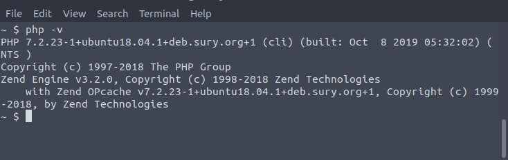
Ubuntuではapache2のPHP設定が別に必要ないです。これでPHPのインストールは完了です。
apache2のドキュメントパスを修正します。
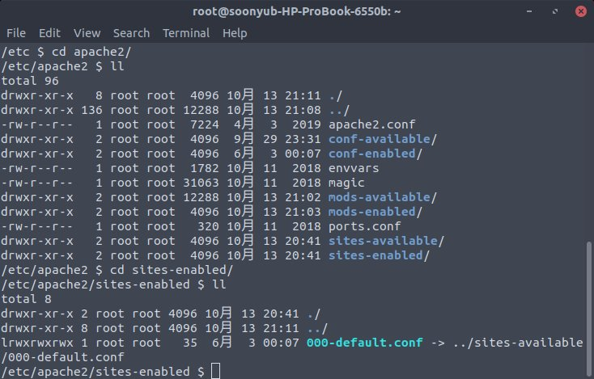
「/etc/apache2/sites-enabled」フォルダの「000-default.conf」のファイルを修正します。
000-default.conf
DocumentRoot /home/htdocs
<Directory /home/htdocs/>
Options Indexes FollowSymlinks
AllowOverride None
Require all granted
</Directory>
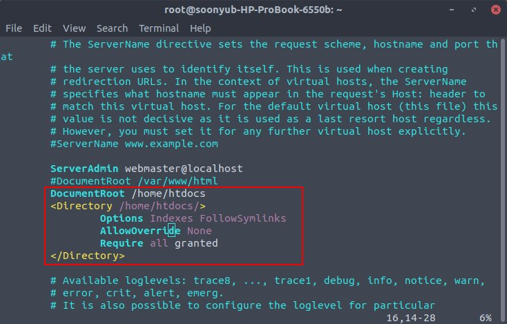
そして「/home/htdocs」フォルダに「index.php」ファイルを追加してphpinfo()を作成しましょう。
/home/htdocs/index.php
<?php
phpinfo();
そして「apache2」を再起動して「localhost」で接続しましょう。
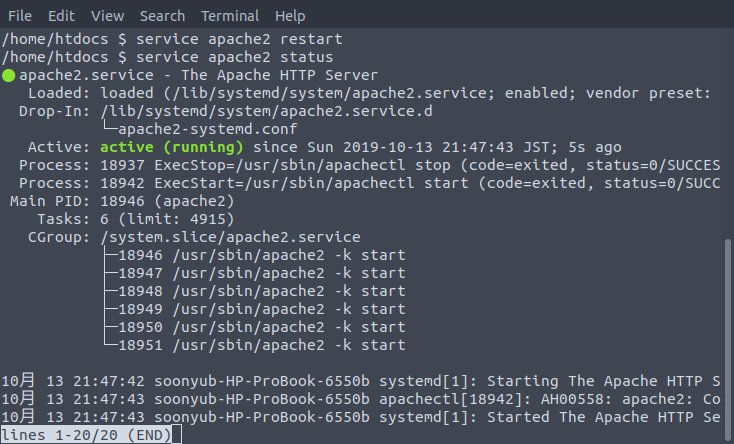
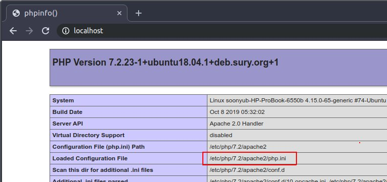
phpがインストールされたことを確認できます。そして「php.ini」ファイルが何処にあるかを確認できます。
PHPが完了しましたから、composerをインストールしましょう。
先、curlをインストールしましょう。
sudo apt-get install curl
そしてcurlのインストールファイルをダウンロードしてインストールします。
curl -sS https://getcomposer.org/installer -o composer-setup.php
sudo php composer-setup.php --install-dir=/usr/local/bin --filename=composer
rm composer-setup.php
link - https://getcomposer.org/download/
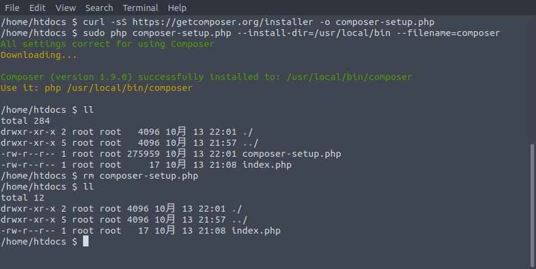
ここまでcomposerはセット完了しました。
簡単にライブラリを一つ連携して使用してみましょう。
php用composerレポジトリは下記通りです。
link - https://packagist.org/
javaのmavenレポジトリに比べると少し片付けれている雰囲気ではないけど、必要な情報はすべてあるので、良いサイトです。
先、検索テキストにCarbonと言うことで検索してみましょう。参考にCarbonはPHPでデートフォマットを使えるライブラリです。(date関数があるのに？)
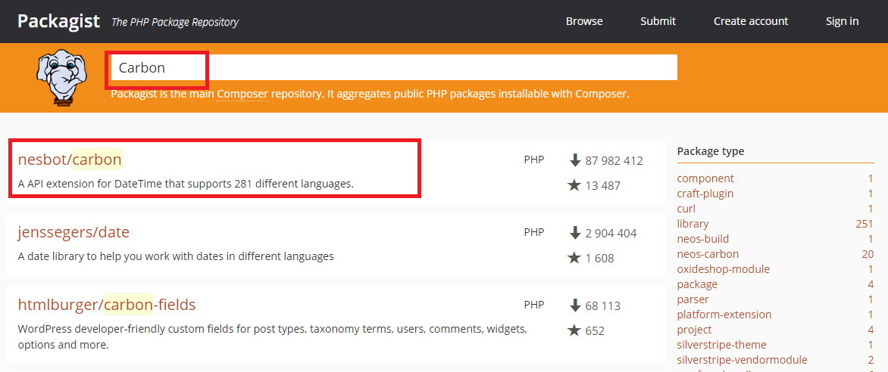
それでよく使える順位で検索させますが、一番上のリストをクリックしましょう。
様々な説明がありますが、我々はこのライブラリが目的ではなく、composerのリンクが目的なので一応Installationの項目を確認しましょう。
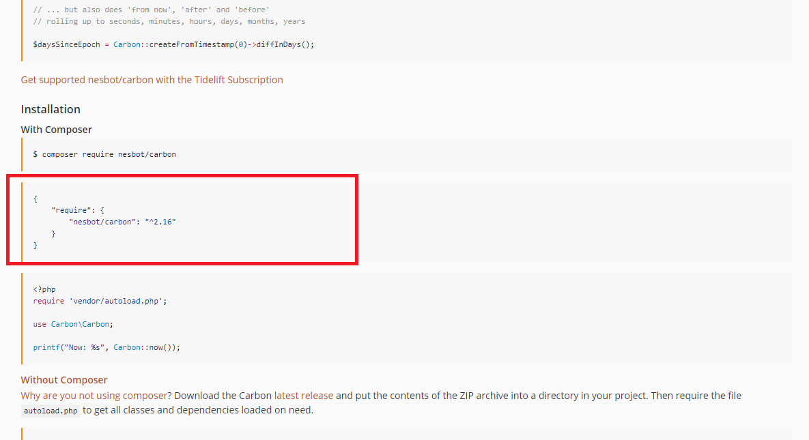こんにちは。明月です。
前述でUbuntuでApache2をインストールする方法に関して投稿しました。
link - [Ubuntu] Apache2をインストールする方法
UbuntuでPHPをインストールする方法は難しくないです。設定は少し必要ですが。
先にapt-getにレポジトリを追加してインストールしましょう。
add-apt-repository ppa:ondrej/php
apt-get update
apt-get install php7.2
link - https://www.liquidweb.com/kb/install-php-7-2-ubuntu-16-04/
ターミナルでapt repositoryを登録してphp 7.2をインストールすればできます。
Ubuntuではapache2のPHP設定が別に必要ないです。これでPHPのインストールは完了です。
apache2のドキュメントパスを修正します。
「/etc/apache2/sites-enabled」フォルダの「000-default.conf」のファイルを修正します。
000-default.conf
DocumentRoot /home/htdocs
<Directory /home/htdocs/>
Options Indexes FollowSymlinks
AllowOverride None
Require all granted
</Directory>
そして「/home/htdocs」フォルダに「index.php」ファイルを追加してphpinfo()を作成しましょう。
/home/htdocs/index.php
<?php
phpinfo();
そして「apache2」を再起動して「localhost」で接続しましょう。
##005##
phpがインストールされたことを確認できます。そして「php.ini」ファイルが何処にあるかを確認できます。
PHPが完了しましたから、composerをインストールしましょう。
先、curlをインストールしましょう。
sudo apt-get install curl
そしてcurlのインストールファイルをダウンロードしてインストールします。
curl -sS https://getcomposer.org/installer -o composer-setup.php
sudo php composer-setup.php --install-dir=/usr/local/bin --filename=composer
rm composer-setup.php
link - https://getcomposer.org/download/
ここまでcomposerはセット完了しました。
簡単にライブラリを一つ連携して使用してみましょう。
php用composerレポジトリは下記通りです。
link - https://packagist.org/
javaのmavenレポジトリに比べると少し片付けれている雰囲気ではないけど、必要な情報はすべてあるので、良いサイトです。
先、検索テキストにCarbonと言うことで検索してみましょう。参考にCarbonはPHPでデートフォマットを使えるライブラリです。(date関数があるのに？)
それでよく使える順位で検索させますが、一番上のリストをクリックしましょう。
様々な説明がありますが、我々はこのライブラリが目的ではなく、composerのリンクが目的なので一応Installationの項目を確認しましょう。
その後、「composer.json」を作成しましょう。
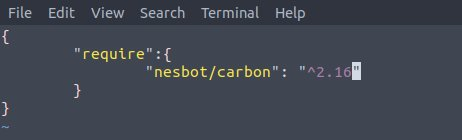
そして「composer install」で当該なレポジトリをタウンロードしましょう。
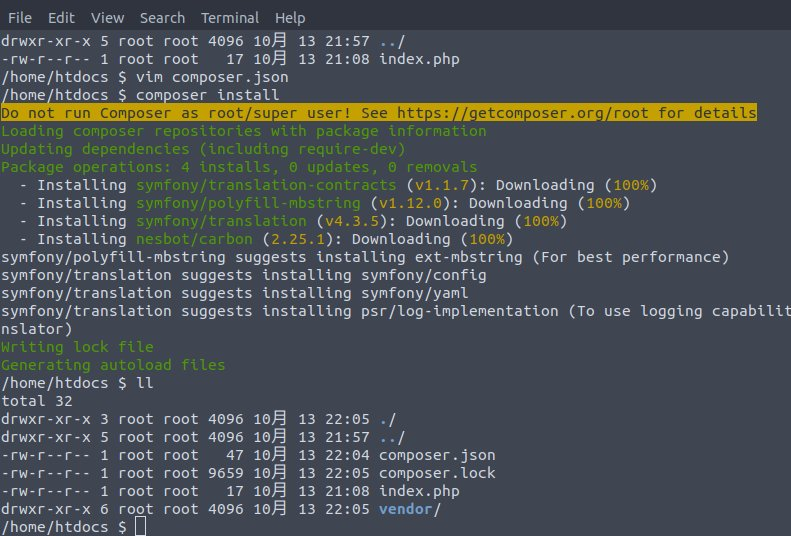
これでインストールが完了したらしいです。ダウンロードしたライブラリを使ってみましょう。
<?php
require_once 'vendor/autoload.php';
use Carbon\Carbon;
$dt = Carbon::now();
$format = Carbon::createFromFormat('Y-m-d H:i:s', $dt);
echo $format;
作成が完了されたら「localhost」で確認しましょう。
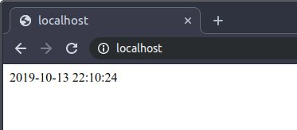
これでUbuntuでPHPとcomposerが使用できるので、開発環境のセットは完了ですね。
="width: 848px;">その後、「composer.json」を作成しましょう。
そして「composer install」で当該なレポジトリをタウンロードしましょう。
これでインストールが完了したらしいです。ダウンロードしたライブラリを使ってみましょう。
<?php
require_once 'vendor/autoload.php';
use Carbon\Carbon;
$dt = Carbon::now();
$format = Carbon::createFromFormat('Y-m-d H:i:s', $dt);
echo $format;
作成が完了されたら「localhost」で確認しましょう。
これでUbuntuでPHPとcomposerが使用できるので、開発環境のセットは完了ですね。
- [Ubuntu] PHPをインストール、Composer設定する方法2019/11/13 07:32:21
- [Ubuntu] テーマ(Arc)を変更する方法(tweak)2019/11/12 07:32:13
- [Ubuntu] Apache2をインストールする方法2019/11/11 07:28:28
- [Ubuntu] 「acquire the dpkg frontend lock」のエラーを解決方法2019/11/10 22:19:34
- [Ubuntu] JavaインストールとEclipseをインストールする方法2019/11/08 07:29:55
- [Ubuntu] MariaDB(Mysql)をインストールする方法2019/11/07 07:50:58
- [Ubuntu] Chromeをインストールする方法2019/11/06 19:48:19
- [CentOS] YUMについて、YUMが出来ない場合処理方法2019/11/05 07:17:58
- [CentOS] MariaDB(Mysql)をインストール2019/11/04 18:35:10
- [CentOS] FTPインストールする方法(vsftpd)2019/11/01 07:29:57
- [CentOS] SAMBAインストール方法2019/10/30 07:38:57
- [CentOS] PHPインストールする方法2019/10/29 20:09:03
- [CentOS] ApacheとTomcatの連携2019/10/29 07:28:33
- [CentOS] Tomcat インストール方法2019/10/28 22:38:56
- [CentOS] Java インストール2019/10/28 00:22:32
- [Python] 11. デコレーター（Decorator）を使う方法2020/06/09 17:27:18
- [Python] 10. モジュールとパッケージ(import)2020/06/08 19:07:50
- [Python] 09. 例外処理する方法2020/06/05 17:11:47
- [Python] 08. ジェネレータ(Generator)2020/06/04 18:46:08
- [Python] 07. globalとnonlocal2020/06/03 20:34:49
- [Python] 06. 関数(function) - インライン関数、callbak、ラムダ(lambda)そしてクロージャ2020/06/02 20:51:22
- [Python] 05. コンプリヘンション(Comprehension)を使用する方法2020/06/01 19:38:58
- [Python] 04. 制御文(if, while, for, break, continue)とインデント2020/05/29 21:09:08
- [Python] 03. Pythonでリスト(list)とタプル(tuple)、そしてディクショナリ(dictionary)、セット(set)2020/05/27 18:49:08
- [Python] 02. データタイプ、変数宣言そしてコメントする方法2020/05/26 18:16:52
- [Python] 01. Python3をインストールする方法(Anacondaインストール)2020/05/25 19:02:44
- [Java] HttpConnectionを利用してウェブページを取得する方法2020/05/20 23:53:24
- [Java] Jsoupを利用してXMLファイル(HTML)を扱う方法2020/05/19 19:32:21
- [C#] 非同期ソケット通信(IOCP)-APMパターン2020/05/18 18:45:37
- [C#] 非同期ソケット通信(IOCP)-EAPパターン2020/05/15 19:31:02